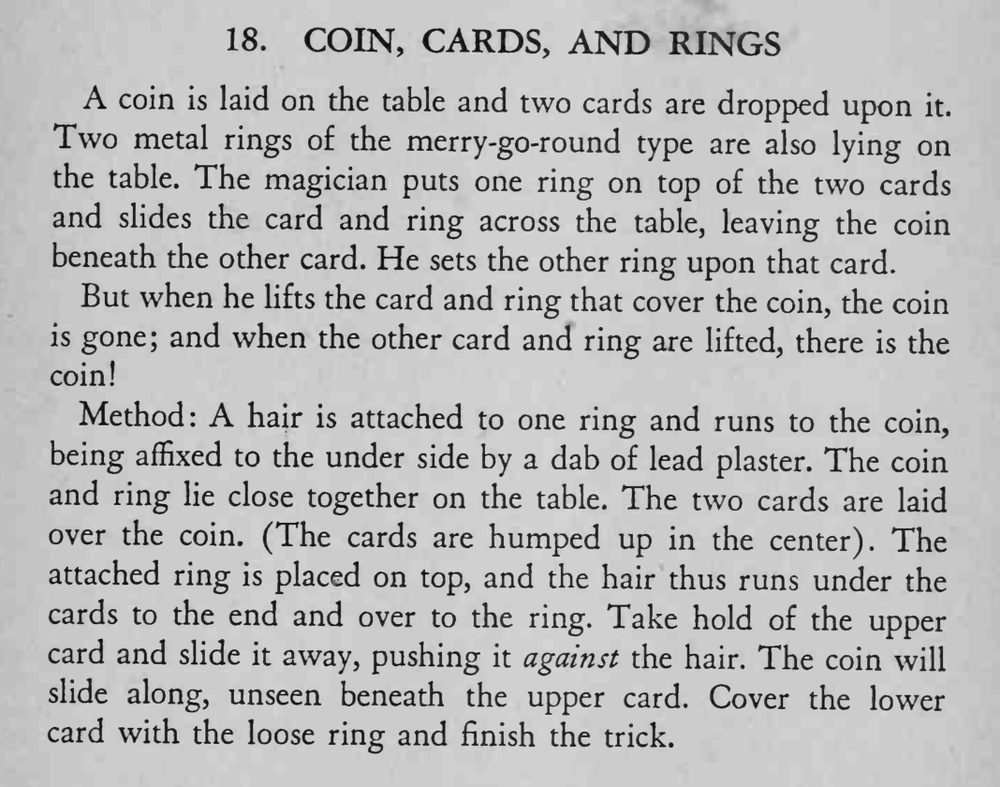

硬币被两张牌盖住，魔术师用圆环把牌和环一起滑走；掀开这组，硬币不见了，再掀开另一组，硬币却在那里。
头发要短而结实，牌面拱起才不会压住头发；滑牌时动作要平。

coin is laid on the table and two cards are dropped upon Two it. metal rings of the merry-go-round type are also lying on the table. The magician puts one ring on top of the two cards and slides the card and ring across the table, leaving the coin beneath the other card. He sets the other ring upon that card. But when he lifts the card and ring that cover the coin, the coin is gone; and when the other card and ring are lifted, there is the coin! Method: A hair is attached to one ring and runs to the coin, being affixed to the under side by a dab of lead plaster. The coin and ring lie close together on the table. The two cards are laid over the coin. (The cards are humped up in the center). The attached ring is placed on top, and the hair thus runs under the cards to the end and over to the ring. Take hold of the upper card and slide it away, pushing it against the hair. The coin will slide along, unseen beneath the upper card. Cover the lower card with the loose ring and finish the trick.